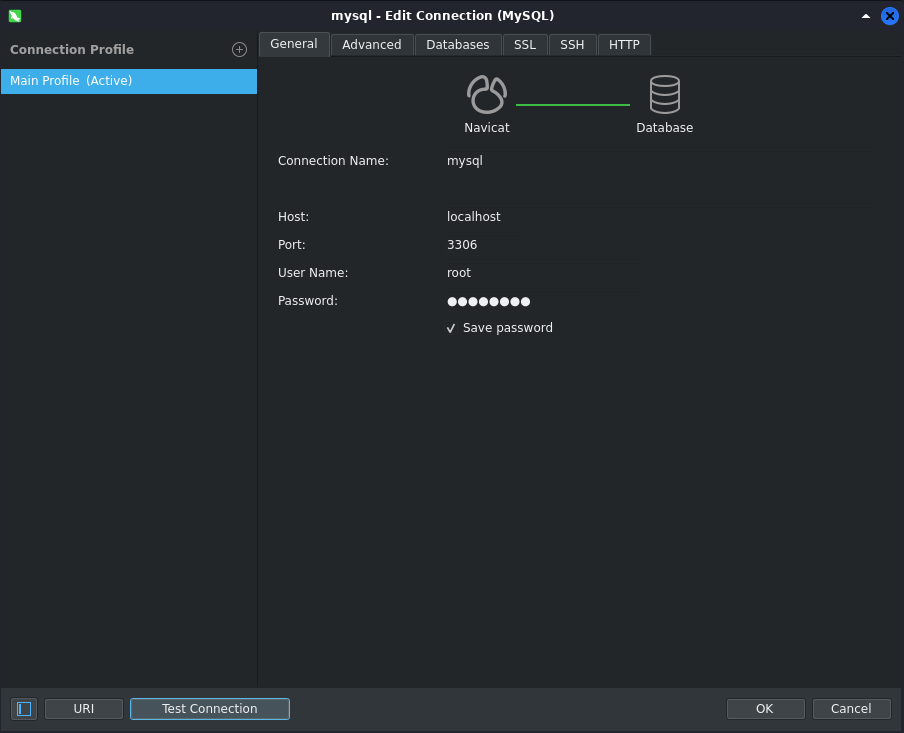

Linux(Kali)安装Mysql(MariaDB)
情景说明
因业务需要开展Linux系统内存优化，需要将所有数据源采集后存入数据库，方便后续查询和分析，以及可视化。先在PC上安装MySQL，进行建表和开发过程。
安装过程
使用apt安装mysql-server
sudo apt install mysql-server
使用apt安装的MySQL已经完成了启动和自启动，无需使用systemctl enable/start，可以使用下面的命令来启动/停止/查看状态
1
2
3
4sudo service mysql status # 查看服务状态
sudo service mysql start # 启动服务
sudo service mysql stop # 停止服务
sudo service mysql restart # 重启服务安装完成后的MySQL还需要进行设置才能使用，否则无法连接上
sudo mysql_secure_installation
按照步骤输入安装密码，进行选择，完成安装
使用客户端测试连接

错误及其解决方法
- Q: 1698 - Access denied for user ‘root‘@’localhost’
A: 执行下面的命令设置密码，注意密码要符合policy要求，否则无法设置成功sudo mysql -u root
ALTER USER ‘root‘@’localhost’ IDENTIFIED WITH mysql_native_password BY ‘test’;
- Q: ERROR 1819 (HY000): Your password does not satisfy the current policy requirements
A: 密码不符合要求，需要符合policy的要求
- Q: ERROR 1045 (28000): Access denied for user ‘root‘@’localhost’ (using password: YES)
A: 需要按照#1的方法设置密码后重新连接
参考资料
All articles in this blog are licensed under CC BY-NC-SA 4.0 unless stating additionally.